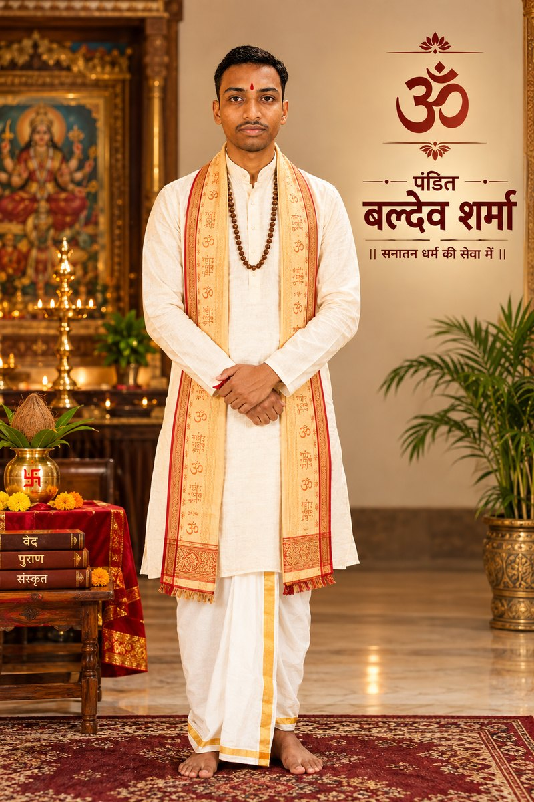

🖼️ Galleryगैलरी
Moments of Devotionभक्ति के क्षण
 Vivah Sanskar
Vivah Sanskar Griha Pravesh
Griha Pravesh Temple Darshan
Temple Darshan Navratri Utsav
Navratri Utsav Vyaas Peeth
Vyaas Peeth Kalash Sthapana
Kalash Sthapana Purnahuti
Purnahuti Rudrabhishek
Rudrabhishek Diwali Puja
Diwali PujaExperienced Karmakandi Pandit for Weddings, Katha, Griha Pravesh, Rudrabhishek, Satyanarayan Katha and all Vedic Sanskars — performed exactly as our shastras prescribe. विवाह, कथा, गृह प्रवेश, रुद्राभिषेक, सत्यनारायण कथा एवं समस्त वैदिक संस्कारों के लिए अनुभवी कर्मकांडी पंडित — शास्त्रोक्त विधि से संपन्न।

Pandit Baldev Sharma has dedicated over 25 years to the study and practice of Vedic rituals, Sanskrit mantras and authentic Karmakand as taught in the ancient Guru-Shishya tradition. From Vivah Sanskar to Shraddh Karma, every ritual is performed with precise Vedic methodology, sincere devotion and deep respect for Sanatan Dharma. पंडित बलदेव शर्मा जी ने 5 वर्षों से अधिक समय वैदिक अनुष्ठानों, संस्कृत मंत्रों तथा गुरु-शिष्य परंपरा से प्राप्त प्रामाणिक कर्मकांड के अध्ययन एवं अभ्यास हेतु समर्पित किया है। विवाह संस्कार से श्राद्ध कर्म तक, प्रत्येक अनुष्ठान शास्त्रोक्त विधि, सच्ची श्रद्धा और सनातन धर्म के प्रति गहरे सम्मान के साथ संपन्न किया जाता है।
He is known for personalized guidance to every yajman family — explaining the meaning of each ritual, helping arrange puja samagri, and ensuring the sanctity of tradition is preserved for the next generation. वे प्रत्येक यजमान परिवार को व्यक्तिगत मार्गदर्शन देने के लिए जाने जाते हैं — प्रत्येक अनुष्ठान का अर्थ समझाना, पूजा सामग्री व्यवस्थित करने में सहायता करना, तथा आगामी पीढ़ी हेतु परंपरा की पवित्रता सुरक्षित रखना।
Authentic rituals performed with complete Vedic methodology and heartfelt devotion.पूर्ण वैदिक विधि एवं सच्ची श्रद्धा के साथ संपन्न प्रामाणिक अनुष्ठान।
Complete Vedic wedding rituals from Ganesh Puja to Saptapadi, performed with correct mantras and shastric order.गणेश पूजा से सप्तपदी तक संपूर्ण वैदिक विवाह अनुष्ठान, शुद्ध मंत्रोच्चार के साथ।
Book Nowबुक करेंAuspicious housewarming puja to purify the new home and invite prosperity before entering.नए घर में प्रवेश से पूर्व शुद्धि एवं समृद्धि हेतु शुभ गृह प्रवेश पूजा।
Book Nowबुक करेंThe child's first hair-cutting ceremony performed with Vedic blessings for health and longevity.शिशु के प्रथम मुंडन संस्कार हेतु आरोग्य एवं दीर्घायु के वैदिक आशीर्वाद सहित अनुष्ठान।
Book Nowबुक करेंTraditional naming ceremony aligning the child's name with nakshatra and Vedic astrology.नक्षत्र एवं ज्योतिष अनुसार शिशु के नामकरण की पारंपरिक विधि।
Book Nowबुक करेंSacred thread ceremony (Upanayana) marking the beginning of Vedic study, performed with full rites.वैदिक अध्ययन के आरंभ का प्रतीक उपनयन (जनेऊ) संस्कार, पूर्ण विधि-विधान सहित।
Book Nowबुक करेंAncestral rites performed with reverence to honour departed souls and seek their blessings.पितरों के सम्मान एवं आशीर्वाद हेतु श्रद्धापूर्वक संपन्न श्राद्ध कर्म।
Book Nowबुक करेंSacred abhishek of Lord Shiva with Rudri mantras, milk, honey and Bilva leaves for peace and protection.शांति एवं रक्षा हेतु रुद्री मंत्रों, दुग्ध, मधु एवं बिल्वपत्र से शिव अभिषेक।
Book Nowबुक करेंPuja for the nine planets to reduce malefic effects and restore balance in one's life and horoscope.नवग्रहों के दुष्प्रभाव कम करने एवं जीवन में संतुलन हेतु नवग्रह शांति पूजा।
Book Nowबुक करेंPowerful jaap for health, longevity and protection from untimely difficulties, dedicated to Lord Shiva.स्वास्थ्य, दीर्घायु एवं संकट-निवारण हेतु भगवान शिव को समर्पित शक्तिशाली जाप।
Book Nowबुक करेंPuja invoking Lord Hanuman's strength and protection, removing fear and negative influences.भय एवं नकारात्मकता निवारण हेतु हनुमान जी की शक्ति व रक्षा का आह्वान।
Book Nowबुक करेंRecitation of all 700 verses of the Devi Mahatmya invoking the protective power of Maa Durga.माँ दुर्गा की रक्षक शक्ति के आह्वान हेतु देवी महात्म्य के 700 श्लोकों का पाठ।
Book Nowबुक करेंInvocation of Goddess Lakshmi for wealth, abundance and prosperity in home or business.घर या व्यवसाय में धन-समृद्धि हेतु माँ लक्ष्मी का आह्वान।
Book Nowबुक करेंFirst worship performed before any auspicious event to remove obstacles and ensure success.किसी भी शुभ कार्य से पूर्व बाधा-निवारण एवं सफलता हेतु प्रथम पूजा।
Book Nowबुक करेंGround-breaking ceremony performed before construction to seek blessings of Bhumi Devi.निर्माण से पूर्व भूमि देवी का आशीर्वाद प्राप्त करने हेतु भूमि पूजन।
Book Nowबुक करेंPuja to correct Vastu doshas in a home or office and restore harmony of the five elements.घर या ऑफिस के वास्तु दोष निवारण एवं पंचतत्व संतुलन हेतु पूजा।
Book Nowबुक करेंRemedial rituals to pacify ancestral doshas and bring peace to the family lineage.पितृ दोष शांति एवं वंश परंपरा में सुख-शांति हेतु उपचारात्मक अनुष्ठान।
Book Nowबुक करेंTraditional five-chapter Katha of Lord Vishnu performed for fulfilment of wishes and family harmony.इच्छापूर्ति एवं परिवार में सौहार्द हेतु भगवान विष्णु की पंचाध्यायी कथा।
Book Nowबुक करेंRecitation of the Sunderkand from Ramcharitmanas to overcome obstacles with Hanuman's grace.हनुमान जी की कृपा से बाधा-निवारण हेतु सुंदरकांड पाठ।
Book Nowबुक करेंNine-day worship of the Navdurga with daily havan and path for protection and prosperity.रक्षा एवं समृद्धि हेतु नवदुर्गा की नौ दिवसीय आराधना, दैनिक हवन-पाठ सहित।
Book Nowबुक करेंSacred fire rituals with Vedic ahutis performed for purification, health and spiritual growth.शुद्धिकरण, स्वास्थ्य एवं आध्यात्मिक उन्नति हेतु वैदिक आहुतियों सहित हवन-यज्ञ।
Book Nowबुक करेंAuspicious puja before opening a new office to invite success and remove obstacles.नए ऑफिस के शुभारंभ हेतु सफलता एवं बाधा-निवारण की पूजा।
Book Nowबुक करेंBlessing ceremony for factories and manufacturing units for safety and smooth operations.सुरक्षा एवं सुचारू संचालन हेतु फैक्ट्री एवं उत्पादन इकाइयों की पूजा।
Book Nowबुक करेंBlessing new vehicles for safe travels, performed with sindoor, lemon and coconut rituals.सुरक्षित यात्रा हेतु नए वाहन का सिंदूर, नींबू व नारियल सहित पूजन।
Book Nowबुक करेंSpecial puja to invoke growth, stability and prosperity for existing businesses.व्यवसाय की वृद्धि, स्थिरता एवं समृद्धि हेतु विशेष पूजा।
Book Nowबुक करेंAny specific puja or Vedic ritual designed around your family's particular need or occasion.आपके परिवार की विशेष आवश्यकता अनुसार तैयार पूजा या वैदिक अनुष्ठान।
Enquire Nowपूछताछ करेंFill the form and our team will call you within a few hours to confirm the muhurat and requirements.फॉर्म भरें, हमारी टीम कुछ घंटों में मुहूर्त एवं आवश्यकताओं की पुष्टि हेतु कॉल करेगी।
Your booking request has been received. Our team will contact you shortly.आपका बुकिंग अनुरोध प्राप्त हो गया है। हमारी टीम शीघ्र संपर्क करेगी।
5+ years of Karmakand practice5+ वर्षों का कर्मकांड अनुभव
Performed exactly per shastraशास्त्रोक्त विधि अनुसार
Correct mantras & sequenceशुद्ध मंत्र एवं क्रम
Punctual on every occasionहर अवसर पर समयबद्ध
Fair & transparent pricingपारदर्शी एवं उचित मूल्य
Complete list & help arrangingपूर्ण सूची एवं सहायता
Every family guided closelyहर परिवार को व्यक्तिगत मार्गदर्शन
Available to travel anywhereकहीं भी यात्रा हेतु उपलब्ध
"Pandit Ji performed our Griha Pravesh with such devotion — every ritual was explained to us beforehand. Truly authentic.""पंडित जी ने हमारा गृह प्रवेश अत्यंत श्रद्धा से संपन्न किया — हर अनुष्ठान पहले समझाया गया। सच में प्रामाणिक।"
"Booked him for our wedding — punctual, organized, and every mantra pronounced with clarity. Highly recommended.""विवाह हेतु बुक किया — समयबद्ध, व्यवस्थित एवं शुद्ध मंत्रोच्चार। अत्यंत अनुशंसित।"
"Pandit Ji conducted the Rudrabhishek with such precision and calm — the whole family felt genuinely blessed afterwards.""पंडित जी ने रुद्राभिषेक इतनी शुद्धता एवं शांति से संपन्न किया — पूरे परिवार को वास्तव में आशीर्वाद अनुभव हुआ।"
Vivah SanskarGriha PraveshTemple DarshanNavratri UtsavVyaas PeethKalash SthapanaPurnahutiRudrabhishekDiwali PujaRecordings from recent pujas, kathas and havans performed by Pandit Baldev Sharma.पंडित बलदेव शर्मा द्वारा संपन्न हाल की पूजा, कथा एवं हवन की रिकॉर्डिंग।


Why this Vishnu Katha is performed for wish fulfilment and family harmony.इच्छापूर्ति एवं परिवार में सौहार्द हेतु यह कथा क्यों की जाती है।
Read Moreऔर पढ़ें →How this sacred abhishek brings peace, health and removes obstacles.यह पवित्र अभिषेक शांति, स्वास्थ्य एवं बाधा-निवारण कैसे लाता है।
Read Moreऔर पढ़ें →A complete checklist of samagri and steps for an auspicious housewarming.शुभ गृह प्रवेश हेतु सामग्री एवं चरणों की पूर्ण सूची।
Read Moreऔर पढ़ें →Understanding the nine planets and how this puja restores balance.नवग्रहों को समझना एवं यह पूजा संतुलन कैसे लाती है।
Read Moreऔर पढ़ें →Exploring the sixteen Sanskars that shape a devout Hindu life.सोलह संस्कार जो हिंदू जीवन को आकार देते हैं।
Read Moreऔर पढ़ें →Simply fill the booking form above, call, or message us on WhatsApp with your puja type, date and city.ऊपर दिया गया फॉर्म भरें, कॉल करें या WhatsApp पर पूजा प्रकार, तिथि एवं शहर बताएं।
Yes, Pandit Baldev Sharma is available for outstation bookings across India with prior scheduling.हाँ, पूर्व सूचना पर पंडित जी भारत में किसी भी शहर हेतु उपलब्ध हैं।
A complete samagri list is shared after booking, based on your specific puja — we also guide you in arranging it.बुकिंग के बाद पूजा अनुसार सामग्री सूची दी जाती है, व्यवस्थित करने में सहायता भी की जाती है।
Yes, rituals can be tailored to family traditions, time constraints or specific intentions.हाँ, पारिवारिक परंपरा, समय-सीमा या विशेष उद्देश्य अनुसार अनुष्ठान अनुकूलित किए जा सकते हैं।
Dakshina varies by puja type and location — always fair and discussed transparently before booking.दक्षिणा पूजा प्रकार व स्थान अनुसार भिन्न होती है — बुकिंग से पूर्व पारदर्शी रूप से तय की जाती है।
Yes, video/phone consultations are available for muhurat selection and ritual guidance.हाँ, मुहूर्त चयन एवं मार्गदर्शन हेतु वीडियो/फोन परामर्श उपलब्ध है।